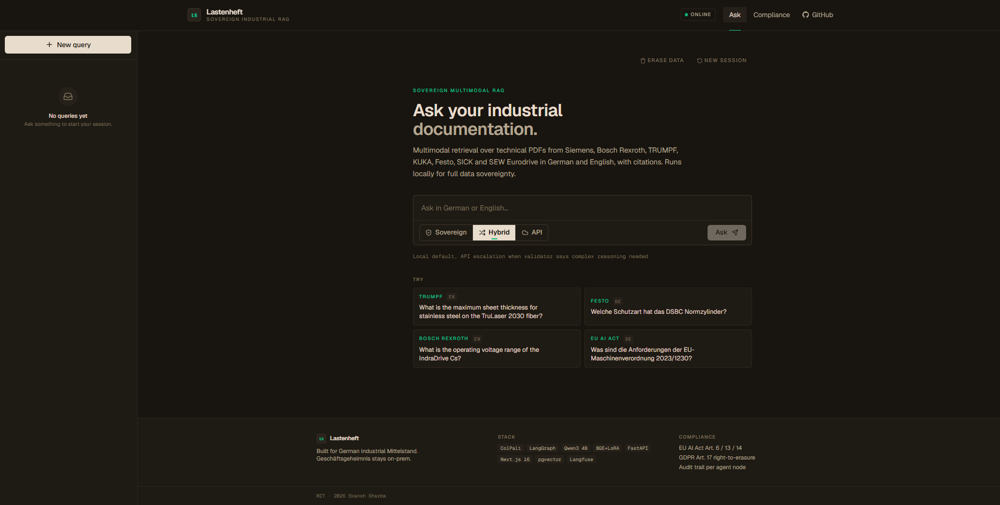
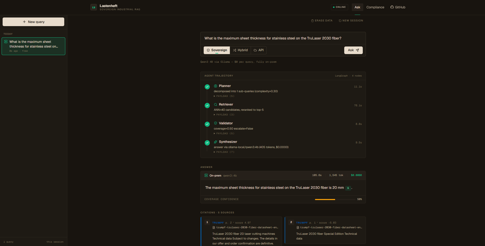
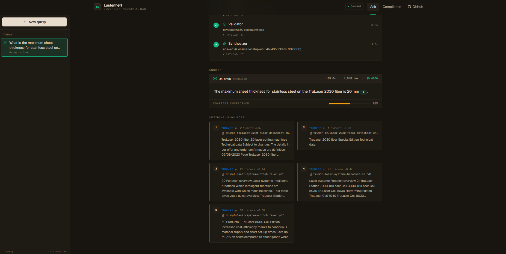
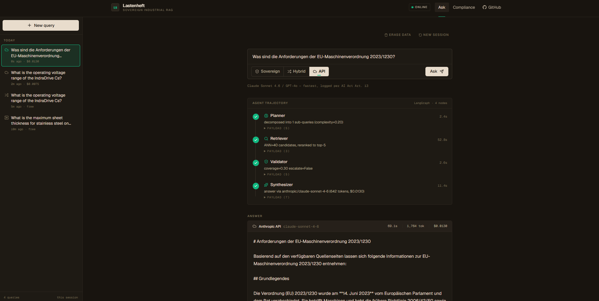
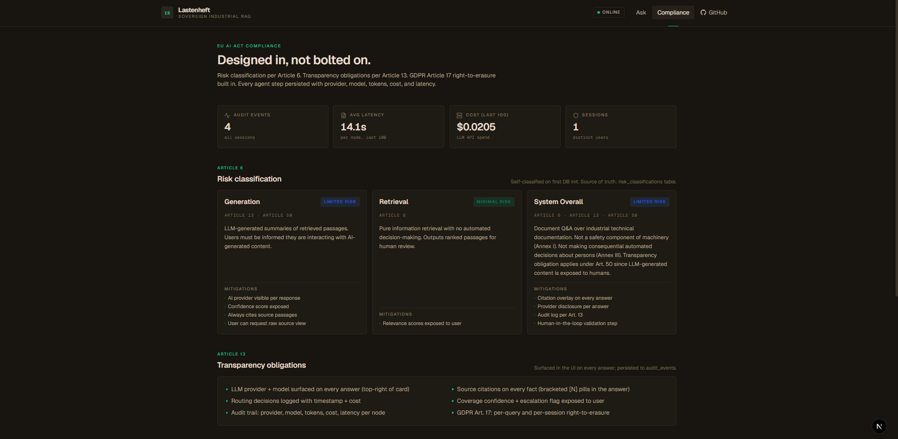
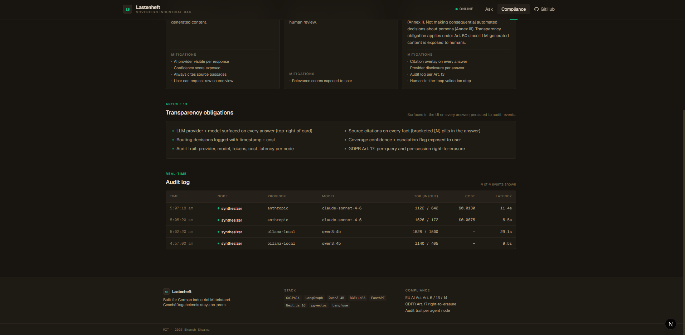
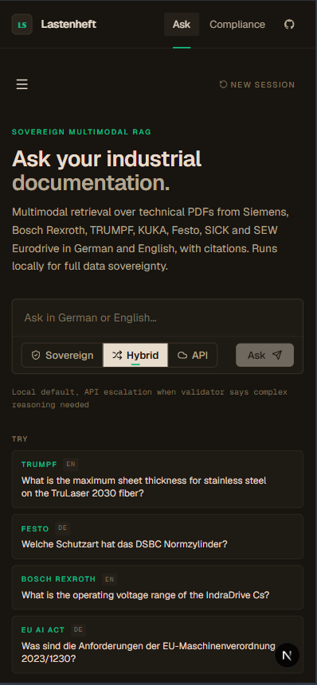
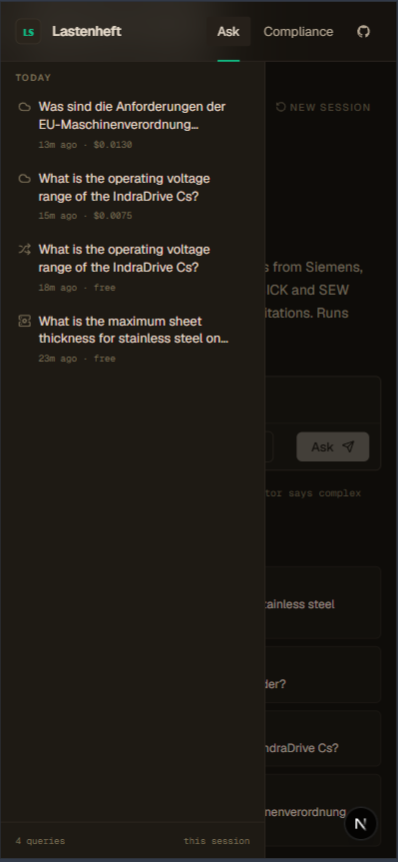

A self-hosted AI that answers questions over German industrial PDFs (Siemens, Bosch, TRUMPF, KUKA, Festo) in German and English. No OCR. No data sent to OpenAI. EU AI Act compliant by design.
Mittelstand companies have 40+ years of technical knowledge locked inside PDFs. They want AI to unlock it. But the usual tools don't fit.
Engineering drawings and datasheets are IP. They cannot be sent to OpenAI or any US cloud. Lastenheft runs entirely on your own hardware.
Industrial AI often counts as high-risk. Every deployment needs risk classification, transparency, and an audit trail. Built in here, not bolted on.
Technical pages are full of tables, schematics, and drawings. Text-only systems lose them. Lastenheft reads the page as an image, directly.
When tolerances and certifications are on the line, a hallucinated answer is worse than no answer. Every fact here is cited to a source page.
You ask a question. A multi-agent pipeline finds the right pages, checks them, and writes a cited answer. You watch every step happen live.
Breaks your question down and decides how hard it is.
ColPali visual search over 900+ pages. No OCR. Works on diagrams.
Confirms the found pages can actually answer the question.
Writes the answer with a citation on every fact. Local or API.
Clean, fast, German-industrial. Dark interface built for long reading sessions.








Evaluated on 108 held-out questions over 909 pages. The fine-tuned reranker beats the off-the-shelf one by a clear margin.
| Retrieval strategy | MRR | Hit@1 | Hit@10 | nDCG@10 |
|---|---|---|---|---|
| ColPali visual search (baseline) | 0.341 | 20.4% | 61.1% | 0.395 |
| + BGE reranker (off-the-shelf) | 0.707 | 62.0% | 85.2% | 0.743 |
| + BGE reranker (my LoRA fine-tune) | 0.758 | 70.4% | 85.2% | 0.781 |
Not a marketing slide. Every requirement maps to working code and a real database table.
Real ML, real engineering, real deployment. Every layer chosen for sovereignty and precision.
Full source code, reproducible eval, training scripts, and a one-command Docker setup. Clone it, run it on your own hardware, point it at your own PDFs.